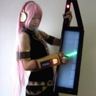
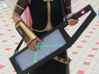
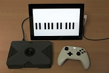
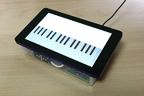
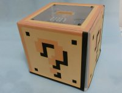
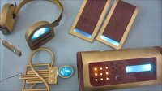
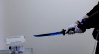
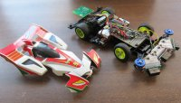

| Name: | Mashigure / ましぐれ / 真時雨 |
| E-Mail: | mashigure (ｱｯﾄ) nicotech (ﾄﾞｯﾄ) jp |
Here, Mashigure's principal products are introduced.
趣味で作った製作物の中から、代表作を紹介します。

The digital shoulder strap keytar-like device “Ano Gakki“ was based off of a previously fictional instrument, which made its debut in December of 2008 alongside Hatsune Miku in the music video for her popular song “Innocence” .
While fans were extremely puzzled with the concept of the device, they instantly fell in love with its sleek design, possible musical capabilities, and visual coordination with Miku herself.
Since then, there have been numerous attempts to make a replica of Ano Gakki, either in working or prop form.
This model of Ano Gakki made by Mashigure has a LED panel, which is installed under the semitransparent keyboard of the instrument.
Its light effects make Ano Gakki as visually stunning.
watch video on Nico-Video
あの楽器とは、【初音ミク】Innocence【3DPV】 に登場する、初音ミクが弾いている架空の楽器こと。
色々な人が開発した様々なバージョンが存在します （あの楽器についてはこちらを参照）。
ましぐれ作成モデルの特徴は「LEDパネル」「半透明鍵盤」「eVocaloid音源搭載」「楽器として実際に演奏可能」など。
blog記事を読む・
動画を見る

This is a Musical Instrument with 8-bit sound, that can be played mucsic by using X-BOX One controller.
"PicoPico" is a japanese Onomatopoeia to express 8-bit sound.
show project page on github
ピコピコ音が出る箱型ガジェットです。ゲームのコントローラを使って演奏することができます。
また、PCにつなぐとUSB-MIDI機器として認識されるので、PC側のソフトウェアと組み合わせて色々な演奏が可能です。
プロジェクトページを見る

This is a Musical Instrument with Virtual singer HATSUNE Miku's Voice.
It can be played not only by touching screen, but also by connecting USB-MIDI devices.
watch video on Nico-Video
学研大人の科学から発売されている『ポケットミク』（ポケミク）と言う初音ミクの声で歌うガジェットがあります。
単体でもスライタス（ペン）を使って演奏ができるのですが、PCにつなぐとさらに幅広い遊び方ができるようになります。
そこでポケミクを（PCの代わりに）Raspberry Piという小型のコンピュータボードと内部で接続し、一体化することで、簡単に色々な演奏ができるようにしよう。というのがこのプロジェクトです。
タッチパネルで演奏できるので「ポケミクTouch」と命名していますが、USBポートに接続したキーボードを使って演奏できるなど、タッチパネル以外にも多彩な演奏方法で歌を奏でることができます。
動画を見る

When a coin is inserted into this coin box, various sound effect is played.
watch video on Twitter
カンパ箱とは、ミュージシャンやパフォーマーがカンパ(寄付)を入れてもらうために置いておく箱のことで、
このカンパ箱はお金を入れてくれた人に喜んでもらえるようにギミックとしてコインを入れると音が鳴るようにしたものです。
どんな音が鳴るのかはコインを入れてからのおたのしみ。
コイン投入口は3Dプリンタ製で、コインで赤外線が遮られることによりコインの投入を検知します。
blog記事を読む・
動画を見る

Cosplay Items of a Vocaloid "Megurine Luka" with LED Illumination.
watch video on Twitter
ボーカロイド「巡音ルカ」さんの衣装を音に反応して光る電飾衣装にするプロジェクトです。
装着するアクセサリ類のそれぞれに電源（電池）、マイク、マイコンを搭載し、マイクが音を拾うとLEDを光らせるように制御しています。
blog記事を読む・
動画を見る

Honebami-Toshiro is a japanese sword crafted by Awataguchi Toshiro Yoshimitsu in the 13th century.
Honebami’s name of bone (骨) breaker (喰) comes from the saying that one can effortlessly throw him and still slice through the bone of the enemy.
This gadget modeled Honebami-Toshiro can break the bone using Acceleration sensor and Bluetooth module.
When the sword is swinged, it glows and the bone-like gadget connected via Bluetooth is broken.
watch video on Nico-Video
骨喰藤四郎、鎌倉時代の刀工「粟田口藤四郎吉光」の作と伝えられる刀。
「切る真似をするだけで骨まで砕ける」程の名刀とされる。
この「切る真似をするだけで骨まで砕ける」というのを超現代的解釈で再現してみました。ついでに光るよ。
blog記事を読む・
動画を見る

Mini 4WD is a car toy sold by TAMIYA Inc. and this is the voice-operated and obstacles avoidable system added Mini 4WD.
It is constructed a Voice Control Unit and a Mini 4WD that has Steering, micro controller, three sensors (position sensitive detectors) and Bluetooth module.
We can operate it by our voice.
watch video on Nico-Video
ミニ四駆にステアリング機構やマイコン、センサー、通信モジュール等を搭載して、某アニメを再現しようという計画。
GPミニ四駆と書いてグランプリミニ四駆、あるいはグランプリマシンと読む。
blog記事を読む・
動画を見る